島を味わう
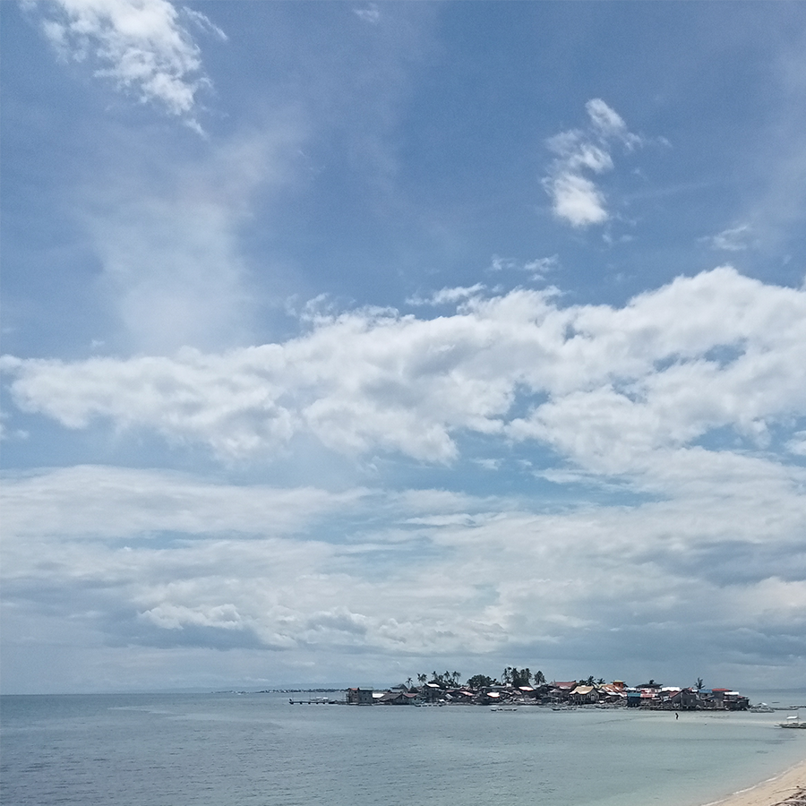
海を味わう
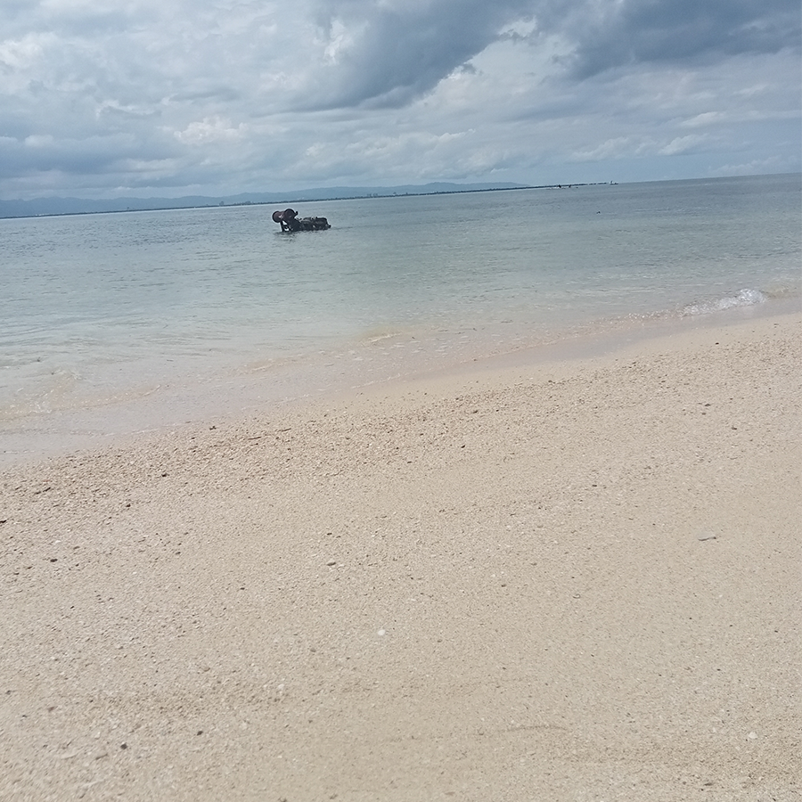
空を味わう
空を味わう
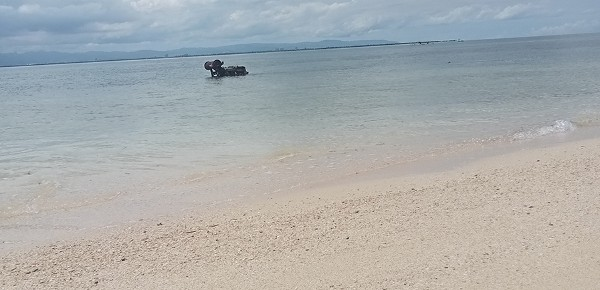
海を味わう
島を味わう
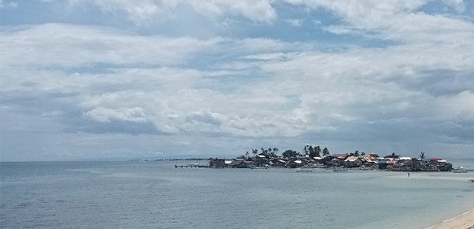
Resort Beaches in Mactan Island
マクタンのリゾートビーチ
セブシティの向かいに位置するマクタン島には多くのビーチリゾートがあり、世界中から観光客が押し寄せ来る。
また、マクタン島には国際空港があり直接マクタンのビーチリゾートに足を運べ、セブシティや周辺地域の玄関口となている。
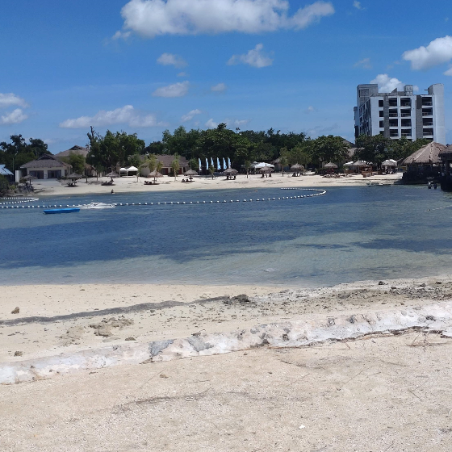
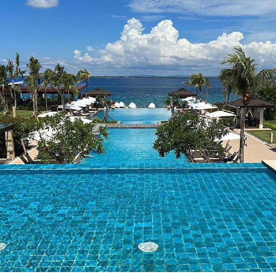
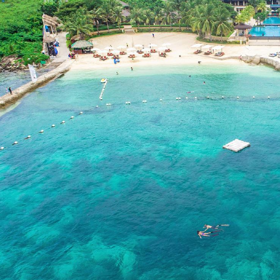
Heritage Sites of Cebu
スペイン統治時代の歴史を感じさせる旧市街
５００年前、マゼランの来訪と共にヨーロッパから伝来したローマカトリックの信者は国民の８割を占め、セブは最初の洗礼が行われたと土地である。
その当時の建物はセブの旧市街に立ち並び、中でもサント・ニーニョ・チャーチは信仰の中心地である。
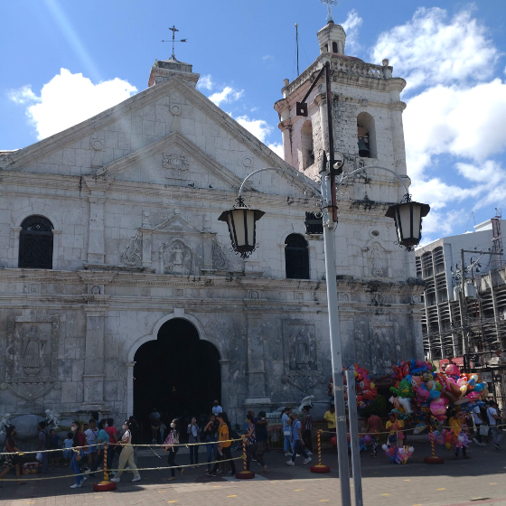
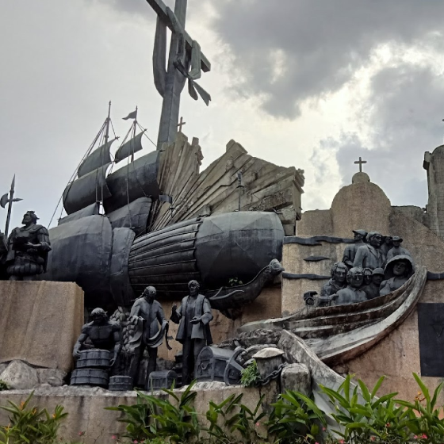
The Islands in The Bisayas
エメラルドブルーの海を持つビサヤの島々
フィリピンはルソン・ビサヤ・ミンダノオの3つの地域に別けられ、その中でもビサヤ地域セブ島を含む多くの島々で構成されている。セブのリゾートのみならず多彩な観光・文化資源により構成されている。
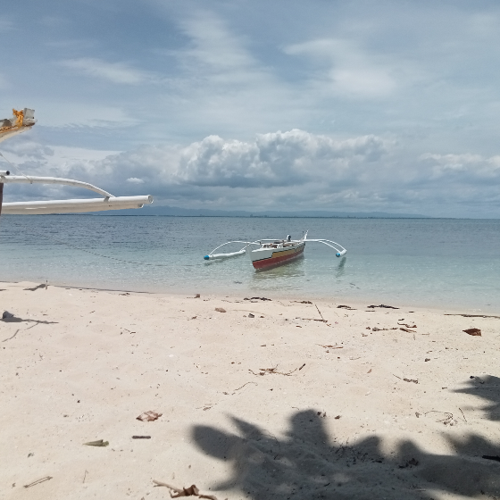
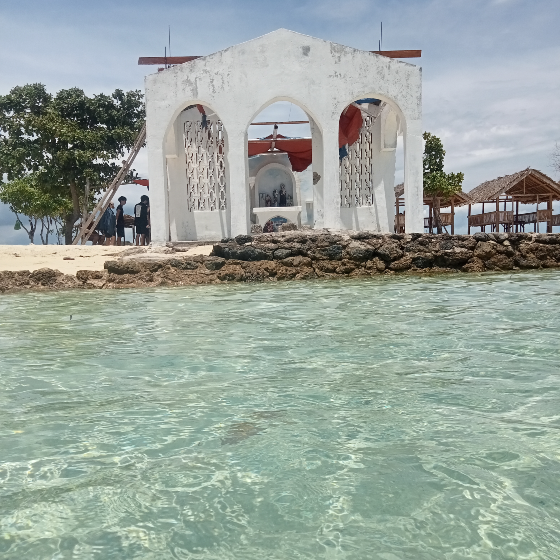
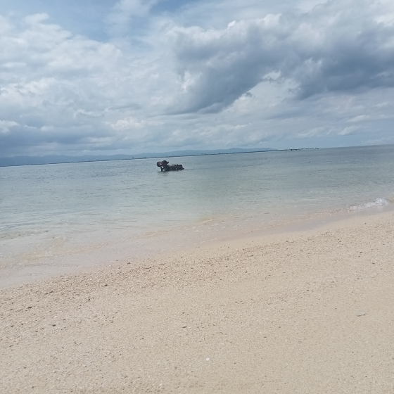